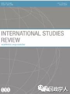
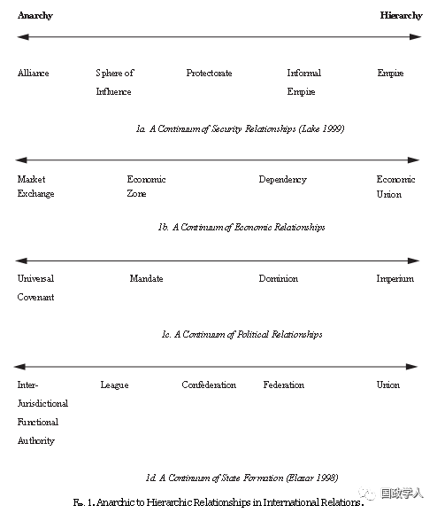

收录于合集 #理论研究 96个

简 介
** 【作者】** DAVID A. LAKE，加州大学圣地亚哥分校政治学杰出教授，曾担任美国政治学会主席（2016-2017）和国际研究协会主席（2010-2011）。他在国际关系理论和国际政治经济学领域中发表了大量文章，最近的一本著作是《国家建设者的困境：关于外部干预的限制》（2016年）。
** **【 编译 】****徐垚晟
** **【 校对 】****杨艺华
** **【 审核 】****蔡宇
** **【 来源 】****International Studies Review, Volume 5, Issue 3, September 2003, Pages 303–323, https://doi.org/10.1046/j.1079-1760.2003.00503001.x
** 【期刊】** 《国际研究评论》（International Studies Review）是由牛津大学出版社代表国际研究学会（the International Studies Association）出版的同行评审学术期刊。该期刊每年出版四期，旨在为学者和学生就国际研究相关领域进行的对话和辩论提供平台，同时为相关人员提供新的研究方法和研究思路。

国际关系中的新主权观
The New Sovereignty in International Relations
大卫·雷克
内容提要
作者认为，关于主权的学术研究正在经历一场小型复兴。在系统理论中，古典的主权概念被批判，这激励学者们在20世纪80年代末和90年代初将主权作为研究课题，并最终结出硕果。等级制一直是国际关系的一部分，这从统治古代世界的帝国到统治十九世纪的殖民国可以看出。但是随着民族国家成为世界上主要政治组织形式,许多人认为等级制已经过时了。然而，关于主权意义和实践的新研究表明，等级制度在世界各地仍很有活力。在主权研究中的这种小复兴本身并未意识到它所揭示的国际政治中的等级制,且缺乏了一个标准来概念化等级制中的系统变化。本文重点探讨新的主权概念，包括：(1)讨论主权的基本性质；(2)回顾关于主权的古典观点；(3)探究建构主义关于主权的观点；(4)提出改善国际关系理论所需要做的工作；(5)对等级制进行数据分析,从而理解各种形式的混合或受限主权；(6)论述为什么研究国际关系中的等级制很重要。本文贯穿始终的主题是,主权问题远比古典模型中所认识到的要复杂得多,我们的国际关系理论和实践都将通过明确纳入等级制的变化而得到。
文章导读
**1
**
主 权的 两面性
Two Faces of Sovereignty
主权是一种权威关系。在范式定义中,权威是一种社会关系,其中“A使得B遵从A且B是自愿的”。换句话说,权威的特点是一个行为者发出的命令预期会被另一个行为者服从。
权威有至少三个特点值得关注。第一,权力可能是权威的基础,但权威本身并不依赖于强制性的权力行使。权威可以依靠纯粹的自愿或部分自愿，其中A的强制性权力隐藏在幕后，通常显眼，但不直接使用。纯粹的强制性命令并不具有权威性，权威关系必须包含一定程度上的合法性。
第二，权威是一种独特的非强制性命令。虽然权威可以借助神圣权利、传统、民众支持等因素而获得,但A的权威性命令本身并不需要被赋予合理性。因此，权威性命令与道德命令和科学命令有所不同。这一特点突出了正当性在鉴定国际政治中权威的来源和模式方面的重要作用。
第三，作为一个重要的条件，权威从来都不是绝对的。权威的大小是由A的命令和B的偏好之间的最大差异值来衡量的。其中，总是会存在一些被B拒绝的命令。
主权作为一种权威关系，既有内在的一面，也有外在的一面。在内部，主权界定了一个国家内的最终或最高权威。在过去的几个世纪里，最高权威是君主；今天，它可以是政府首脑，也可以是人民。反过来也就是说，主权是一种等级关系。内部主权需要对领土实施有效的控制。Stephen Krasner将此称为国内主权（domestic sovereignty）。1945年以前，拥有国内主权通常是获得国际社会承认的先决条件。自那时以来，国内主权就与主权的第二面日益分离。在外部,主权需要得到其他类似形态国家的承认,成为国际社会中国家的一员,因此,主权本质上是一个社会概念。这一主权意味着形式上平等的关系。Kenneth Waltz将主权描述为“没有国家有权发布命令，也没有国家需要遵从”。Robert Jackson将此称为司法主权（juridical sovereignty）。所以，主权的第二面构成了国家间关系的无政府状态特征。然而，这样的推断虽然看似正确，但把无政府状态当做权威的缺失并没有什么用处。相反,正如本文中所清楚表明的那样,无政府状态是由彼此不具有权威的权威行为者组成的关系。因此，主权的两面是相互联结的。国内的等级制和国际的无政府状态是一枚硬币的两面，两者互相不可分离，这一显而易见的道理常常会被忽略。
2
古典视角下的主权
The Now Classical Perspective
古典视角（现实主义与新现实主义）认为主权是国家的一种固定的、外生的属性，具有绝对性，一个国家要么是主权国家，要么它就不是一个真正意义上的国家。对古典现实主义者来说，作为实际问题的主权大约是在《威斯特伐利亚条约》签订时产生的。主权的核心要义在于，其需要一个单一的政治等级制来实现绝对统治。那么在外部，这体现为每一个国家是独立且形式平等的，没有任何权威可以立于国家之上。这种绝对主权观在二十世纪七十年代后期国际关系发生的从“单元层面理论向系统层面理论”的转变中被保留下来。古典现实主义者关注主权,但没有强调无政府状态。例如,Hans Morgenthau在关于国际法的章节中专门用了一章论述主权,但在索引中却没有使用无政府状态一词,本文作者也无法在文本的任何地方找到它。而新现实主义者则将目光集中于无政府状态而远离了主权，在《国际政治理论》中,Waltz强调了无政府状态,但只在"单元的性质"那一章中用三段提到主权。尽管如此，新现实主义者仍然保留着主权的古典概念。
在Waltz那里，尽管曾经表述“国际关系中可能存在纯粹的无政府状态、纯粹的等级制，和无政府状态与等级制的混合三种状态”，但是后来还是回到了绝对主权观的立场。Waltz认为国际政治结构不是由其内的所有行为者确定的,而是由主要的参与者所确定。在Waltz的分析中,国际政治结构是由大国所确定的,这些大国仍然具有绝对主权,并植根于无政府状态中。
大约在Waltz发表上述观点时，两个关于主权的新观点出现了。第一，经济相互依赖关系理论和跨国关系理论可能从根本上改变了国家主权的性质。Charles Kindleberger甚至认为民族国家即将消亡。面对这样的攻势，新现实主义者发出了两种回应，一是认为国家间相互依赖关系并没有那么深；二是承认相互依赖关系的存在但视之为国家选择的产物。第二，依附理论点出了国家间不平等的结构性条件,是对古典主权观的更具根本性的批判。这一理论认为国家被资本主义世界经济的运作锁定在边缘(或半边缘)地带。依赖是一种条件,而不是一种选择。这种结构观更多是基于权力的差异和不平等的市场进程,而不是权威。但资本主义和随之而来的不平等是如此普遍,以至于权力和权威几乎成了同义词。然而，依附理论的解释力由于东亚新兴工业化国家的成功崛起而被削弱，因为这些国家逃脱了边缘地带并变得繁荣起来。因此,依附理论也被重新概念化为一种国家选择,在今天的所谓华盛顿共识中,认为只要发展中国家建立良好的制度,它们也能在开放的资本主义世界经济中蓬勃发展。
实际上,相互依赖关系理论最终被古典主权观所吸收，依附理论则被现实世界的发展所击败。到二十世纪八十年代初,国际关系领域已达成广泛共识,即国际关系的特点是无政府状态。后来，围绕无政府状态展开的争论是它是否阻碍了合作，但人们普遍认为,无政府状态本身就是对国家间关系的有效描述。
3
建构主义视角下的主权
Constructing Sovereignty
建构主义对古典主权观和无政府状态的批判主要集中在其缺乏生成性原则上。正如John Ruggie所指出的,Waltz的结构概念是静态的,不能解释从封建制度到现代国家制度的功能分化水平尤其是排列原则的变化。
建构主义者认为主权是社会建构出来的。按照John Searle和Alexander Wendt的理解，主权和无政府状态是一种社会事实或社会类型（即通过国家实践产生和复制的社会建构）。因此,主权不是外生于系统的,而是通过实践产生的。主权不必然是固定的或不可侵犯的,但它作为社会事实的地位意味着它是很难改变的。
建构主义者关于主权的核心观点认为主权本身源自"someplace",并深受其他社会规范和实践的影响。在Wendt看来,无政府状态并不一定意味着是霍布斯式的自然状态 ,因为它也包含了洛克和康德的成份。Christian Reus Smit则将主权概念化为国际社会"宪法结构"的三个要素之一,体现了合法性和正当性规范。建构主义的贡献使我们对主权的演变和实质意义有了深刻的理解。
尽管建构主义者将主权视为动态变化的和社会建构的，但是仍继续将主权视为体系中所有国家共有的内在属性，也就是一种绝对条件。这个新的视角有助于解释主权这个原则是如何产生的，但既未认识被殖民的国家没有主权这个异常情况，也未能对其进行解释。虽然它显示出清晰的动态性和生成性,建构主义者仍然表现出一种强烈的具化国家倾向，将主权作为一个二分的、绝对的变量。尽管这些学者阐明主权的含义是随着时间而演变的,但仍然认为主权的实质是一个绝对条件。
4
有问题的主权
Problematic Sovereignty
Stephen Krasner认为威斯特伐利亚主权原则是"一种根据两项原则来组织政治生活的制度安排"，一个原则是领土完整，另一个是将外部行为者排除在国内权威结构之外。虽然关于威斯特伐利亚主权原则的相关条约经常被视为现代国际关系的章程,但Krasner认为,威斯特伐利亚主权原则中的不干涉原则,更像是十九世纪的产物，而不是十七世纪。Krasner也质疑了建构主义的解释是出于自身利益,而不是规范性原则，存在一定偏差。
Krasner更重要的贡献在于将偏离威斯特伐利亚主权原则的情况进行了整理。Krasner记录了在国家对待少数群体(少数群体权利)、对待公民(人权)、管理经济(主权借贷)和设计其宪法结构等主权上问题受到的外部限制的历史。这些矛盾揭示了国内和国际合法主权行为者之间的广泛权威联系。另外，Krasner还探究出了当代主权原则存在的一些异常现象。
虽然很有说服力,但是Krasner对偏离主权情况的整理有两个令人困惑的局限。第一,Krasner强调了偏离，却没有提供将主权的偏离进行系统化分析的标准，而本文作者希望整合出一个反映偏离变化情况的连续阵列。第二，Krasner没有说明这些偏离是否对国际关系造成了实质性的影响。因为新现实主义者可以反驳道,即使是有更多的案例,这种反常现象仍然不能表明国际关系的基本结构和性质与Waltz所描述的有何不同。因此，找出关系的类别或连续性，从理论上解释它们的原因和后果，以及依据更具说服力的数据检验假设，是回应这种可能的批评的必由之路。
5
从偏离到数据
From Deviance To Data
**
**

从形式上讲 ,国家间的关系是沿着连续阵列变化的，这个连续阵列由两个乃至更多国家间的等级制程度而定。等级制的程度由剩余控制权的轨迹所界定,即由每个国家拥有的决策权确定。从上图可以看出，在纯粹的无政府状态中,每一方都拥有在任何情况下自己做决定的充分的权威。在纯粹的等级制关系中,占支配地位的一方拥有作所有决定的充分权威,而另一方则缺乏这一权利。
但是，外部限制在不同领域的表现可能不同，为了简单方便，可以将其分为安全、经济和政治层面。图1显示了从无政府状态到等级制的连续阵列在这些领域呈现的变化。
一个有趣的问题是,这些维度上的关系是独立的还是相关的。在正式帝国中,它们显然一起变化,几乎就像定义所讲的那样:殖民地在安全、经济和政治关系中都从属于宗主国，但事实并不总是这样。例如，Hancock对俄罗斯与其近邻关系的研究表明,该地区的经济关系可能比安全关系更具等级性。那么，是否存在跨维度的模式呢？如果是，模式具体是什么样子的呢？这仍然是值得研究的问题。
**6
**
为何如此费心？
Why Bother？
要证明需要投入大量的时间和精力来发展国际关系中等级制的理论和数据是正当的，就必须对大量重要的话题提出强有力的解释。作者认为，在国际关系研究中引入等级制可能会使国际关系理论对世界的描述上更准确，但真正的问题仍然是：这是否有助于解释我们所关心的问题？
（一）研究设计 Research Design
作者提出了一个问题，如果外在威胁的存在是联邦形成的主要动力，那为什么各个地方政权要将主权交给国家而不是创建一个联盟或者其他的等级制程度更低的关系？在将我们的分析仅限于联盟和联邦时，我们截断了因变量并低估了自变量的因果重要性。言下之意,交易成本、信息不对称、对信誉的需求、以及其他的一些用于解释国际制度建立原因的变量可能比我们现在所认识到的更重要。反过来,作为独立变量的制度的变化正在不断限制，使得对其影响的估计更加不确定。只选择一种类型的制度进行分析，任何这样的分析都会产生很大的问题。例如，向国际组织提出的一个典型问题是，它们是否减轻了战争或者冲突。在这种研究设计中，我们缺乏准确评估制度有效性的能力，只有在我们的分析中包括其他更多的等级制，我们才能提高我们研究的准确性。因此,从方法论上而言作者认为,纳入等级制变化后的理论的解释力将大大增强，足以开发用以研究国际政治中不同权威关系的模型和数据集。
（二）实质性益处 Substantive Benefits
作者举了几个例子，包括美国与拉美关系、俄罗斯与东欧国家之间的关系、美国与沙特阿拉伯的关系等。正如这些例子所证明的,等级制在整个国际体系中反复出现，所以我们应该努力更好地理解等级制。
等级制度与国际社会今天面临的紧迫问题密切相关。保持主权作为绝对和不可分割的条件的概念性幻想,阻碍了棘手问题的解决。如果充分主权是谈判桌上唯一的概念类别,那么任何一方都不可能解决问题。例如，科索沃地位的唯一有效解决办法是从等级制的中间范围寻求。对科索沃的有限外部限制对于威慑塞尔维亚和约束科索沃是必要的。然而,现在保护科索沃的西方大国却轻率地延续了一种错觉,即认为他们的角色是暂时的、自我终止的。但实际上，争端双方会继续坚持其极端立场,这强化了对主权进行外部保障和限制的必要性。.
等级制和谁拥有权威是单极世界的关键问题。因此,国际关系中的等级制不仅是一种对历史的追问、一种在国际政治理论中可以忽视的次大国政治特征、或者是研究设计效率提高的源泉，而是处于国际政治特别是当代政策的实质性核心中的一个现象和主题。将等级制纳入国际关系理论,将包含一个与目前截然不同的研究议程,并将对理论、数据、解释,和政策产生未知的贡献。但是,忽视国际关系中的等级制,就是忽视历史和当代国际体系中的一个更为关键的方面。
7
结 论
Conclusion
等级制在分析层面和实质层面都很重要,但在国际关系领域却不常得到承认。事实上,国际体系是无政府状态的原始假设,排除了等级制作为概念的可能性。从新的关于主权的研究中可以看出，世界存在对于威斯特伐利亚主权原则（无政府状态）的偏离。但是，这些文献还没有包含必要的分析类别和变化维度，以揭示国际政治中关于无政府状态和主权存在怎样的系统性偏离。作者认为，等级制的存在就说明了这种偏离，无政府状态仅仅是国际关系中的其中一种。需要在更贴近现实的前提下重建国际关系理论，国际关系应该是包含了多种变幻的，有时呈现出等级制的关系。
承认现在被司法主权准则掩盖的严酷现实无疑是痛苦的。鉴于国际政治中司法主权的重要性，在政治上宣称1991年波斯湾战争中沙特阿拉伯放弃对其外交政策的控制，并成为美国所保护的国家几乎是不可能的。但是，从学术的角度，不应该仅因为这些概念在政治上是有争议的，就不讨论分析有价值的概念或提出重要的问题。同样，指出不平等的存在并强调其在国际政治中的普遍性，可能会使得“干涉他国内政”的行为合法化，这是一些国家不愿看到的，相较之下，司法主权原则更具有吸引力。
因此，揭示国际政治中的等级制是一把双刃剑。许多国家并不愿公开其作为附属国的地位。但是，同样许多国家利用司法主权原则隐藏可憎的行为从而逃脱国际监督。冷战后，越来越多人意识到威斯特伐利亚主权原则与其他人权、政治权利和公民权利的原则有时会发生冲突。那么通过解释等级制的存在，可以使得其他原则的地位得以提升。
另外，揭示等级制不仅对从属地位的国家很难，而且可能制约和阻止强国的帝国计划。在当今的单级世界中，国际关系学者所能作出的一大贡献莫过于将等级制的存在、原因和后果进行细致的研究。
_ ** _ 本文由国政学人平台编译推荐**
往期阅读
【重磅速递】约瑟夫·奈：美国霸权的兴衰：从威尔逊到特朗普 | 国政学人
【重磅推荐】巴里·布赞：英国学派视角下的中国崛起 | 国政学人
【重磅速递】米尔斯海默：注定失败：自由主义国际秩序的兴衰 | 国政学人
【百年国关】历史在国际社会中的应用：从巴黎和会到现在 | 国政学人
【国际组织】IO杂志：联合国维和行动的武力运用问题研究 | 国政学人
【国际秩序】为什么自由主义国际秩序理念将美国外交政策引入歧途？| 国政学人
【关系理论】“关系”：世界政治关系理论的中国话语 | 国政学人
【英国学派】张勇进：中国与全球国际社会中的自由主义等级制：实力与对规范变迁的协商 | 国政学人
【地区秩序】论经济实力的可转化性：中国经济崛起与东亚安全秩序 | 国政学人
【中俄关系】不得已的伙伴：系统-单元动态与中俄关系 | 国政学人
【IPE研究】美国对外贸易政策的“1934年体制”是如何形成的？| 国政学人
【现实主义】斯蒂芬·沃尔特：傲慢的终结与美国克制的新时代 | 国政学人
【理论批判】系统、层次与结构理论：沃尔兹的理论并非系统理论 | 国政学人
【外交政策】单极体系下的不和平状态与美国外交政策 | 国政学人
【欧洲研究】资本主义多样性与合规：加入欧盟后中东欧的经济改革 | 国政学人
【理论研究】吴建树：权力、道德、均势、联盟与摩根索——汉斯·摩根索的经典现实主义思想再解读
【友谊国关】将友谊重新引入国际关系：从中国到西方的关系本体论
【定量研究】政党实力和经济增长（Party Strength and Economic Growth）| 国政学人
【台湾学者】向骏：美国从“霸权稳定”到“霸凌不稳定” | 国政学人
【理论研究】巴里·布赞等：重思日本：主流国际关系理论的偏见 | 国政学人
【南亚研究】南亚对冲：中印竞争中经济和安全利益的平衡 | 国政学人
【外交政策】美国霸权的自我毁灭：华盛顿浪费了单极时代 | 国政学人
【定量研究】谁在欧洲议会中领导委员会？ ——基于2014年欧洲议会选举的研究 | 国政学人
【定量研究】暴露于难民危机之中会让当地人更有敌意吗？| 国政学人
【恐怖主义】恐怖主义组织扩展数据（EDTG）的介绍——从1970年到2016年 | 国政学人
【定量研究】赞助、信任和国家能力：庇护主义的历史轨迹 | 国政学人
【伊朗研究】比较伊朗伊斯兰革命前后威权政体的本质和领导能力 | 国政学人